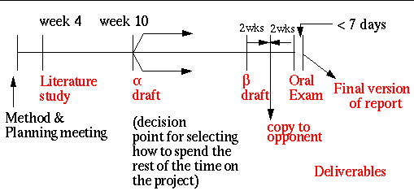

Prof. Gerald Maguire <maguire@kth.se> is an examiner for thesis projects (primarily) on: data communication, mobile communication, personal communication, ... . Note that he spends a large fraction of his teaching time supervising exjobbs. For examples of past thesis projects, see the subset of theses for which he has been an examiner (see the list of the past annoucements (1992-2015) to see which theses he has been an examiner for).
If you have been offered a thesis project (exjobb) in industry which you think he might be the relevant academic advisor and examiner for, then send the description of the proposed project to him via e-mail -- before stating on the project. If you have an idea of your own or are looking for an idea in an area which you think he would be a suitable academic advisor and examiner, send him mail.
Students needing an "Intyg" for CSN should directly contact their study adviser or the relevant administrative office (such as ICT's Student Centrum (Studentcentrum)), as I cannot sign such documents.
Registration forms are available from your school/program. (See for example.) See also the directions for masters thesis project students at ICT.
There is some useful information in the following two presentations the 23 of January 2009: Ben Slimane's presentation on procedures for exjobbs and G. Q. Maguire Jr,'s Scientific method, Previous work, Literature study, Plagiarism, ...: Some useful tips for those doing a masters thesis project.
Please note that all correspondence with me regarding your thesis project should be done via your KTH e-mail account.
In keeping with the KTH policy regarding putting the final thesis in DiVA - I expect that all students that I am an examiner for will agree to put the full text of their report on-line.
Since 1 July 2007, it is possible to have the following types of exjobbs with a grade:
Information for students about the grading of exjobbs
For further information see the information about the specific course, such as IK223X..
My advice to all thesis project students is:
|  |
The literature study should consist of the following parts of the final report (i.e., it is just an early version of the final report containing only a limited subset of the report):
For an example of a masters literature study see: Erik Ehrlund's Literature Study.
I encourage students to use Zotero for
their reference management. Of course you can also use a commercial
tool or other tool. The key is that you should be using a tool to
facilitate working with your references and reference material. (For a
comparisons of difference systems see
The thesis is generally written in Swedish or English. There must be an abstract in both Swedish and English. Under certain circumstances, and with the approval of the supervisor, the thesis may be written in another language, but must still have abstracts in both Swedish and English (see "Language Policy for KTH 2010", Dnr V-2009-0365, doss 1, section 4.10: "Abstracts of dissertations and theses "Every Master's dissertation, licenciate thesis and doctoral thesis that is written in English is to include a Swedish Abstract. Similarly, every dissertation or thesis written in Swedish is to have an English Abstract."). A student may also have a version of the abstract in additional languages. For example, students in double degree programs and exchange programs may need to have a version of the abstract in the language of their home instition.
For those writing in English an excellent resource is:
Chicago Editorial Staff, The Chicago Manual of Style. 14th edition,
923 p., 1993, ISBN 0-226-10389-7
The
Chicago Manual of Style (FAQs)
For a suggest of how to handle (format) on-line reference, see
Online sources
A generally useful book for writers is:
Marie-Claire van Leunen, A Handbook for Scholars, Oxford Univ. Press,
1992.
A useful guide for reports in Swedish:
Skrivregler för svenka och engelska från TNC, Terminologicentrum TNC, TNC 100, Solna, 2001. ISBN 91-7196-100-3.
See also KTH's language tools.
Note that under the Bern Convention every figure has its own copyright, thus if you are going to use a figure from someone else you must make sure that you have the copyright owner's permission. Generally when you get this permission they will say how they wish this to be acknowledged. This is in addition to your existing obligation to properly cite your sources.
For an nice introduction to statistics for usability studies, see chapter 2 of Tom Tullis and Bill Albert, Measuring the User Expeience: Collecting, Analyzing, and Presenting Usability Metrics, Morgan Kaufmann, 2008, ISBN 978-0-12-373558-4
Edoardo Paone's presentations slides -- appear here with the permission of the author.
Vassilios Ververis's presentations slides -- appears here with the permission of the author.
for some guidance about citing software see: Mike Jackson, "How to cite and describe software", Software Sustainability Institute, Last updated: Tuesday 4 September 2012, avialable from: http://software.ac.uk/so-exactly-what-software-did-you-use
Note the very useful function in R to get the BibTeX for R or a package:
x=citation() # to get the citation information for R
toBibtex(x)
or
x=citation('packagename')
toBibtex(x) # to get the BibTeX entry for the package whose name you have entered above
Some interesting statistics about past theses: Length (over time), Histogram of lengths, and CDF of lengths.
For some statistics on distribution of thesis presentations over the years, the year, the months, days of the months, days of week, hour of the day (when the oral examination started), and number of exams per day. From these we can see that June and December are the major months for presentations; there is a possibly small cluster of days at the end of the month - but just about any day of the month exams have occured; and Monday, Thursday, and Friday are the most popular days for presentations. One can also see that except for the low at noon and the peak at 13:00, the starting times are rather spread over the day. Additionally, it is quite rare to have 3 or 4 exams on the same day, but about 1/3 of the examinations took place on the same day as another exam.
| All examiners | Maguire | |||
|---|---|---|---|---|
| in English | in Swedish | in English | in Swedish | description |
| 241 | 207 | 289 | 207 | median |
| 62 | 61 | 100 | 98 | minimum (non-zero) |
| 644 | 572 | 606 | 509 | maximum |
Approximately 90% of all English language abstracts for theses examined by prof. Maguire are between 200 and 450 words. Note that databases such as ProQuest Dissertations & Theses (PQDT)limit abstracts to 350 words. While Canada's National Archive limits Masters thesis abstracts to 150 words (and Doctoral dissertation to 350 words). Chalmers University of Technology suggests a Master's thesis abtract should be between 250 and 350 words.
At ICT, the median length of abstracts in number of paragraphs is 3 with a standard deviation of 1.9 paragraphs.
For a short description of how to write an abstract, see Philip Koopman, How to Write an Abstract, Essay, Carnegie Mellon University, October, 1997.
Choosing good keywords can help others to locate your thesis and related theses.
When choosing keywords consider the following:
A list of paired English-Swedish kewords used in theses at KTH as of 2014.08.11 can be found here and the list of keywords by school extracted from theses. Both of these sets of keywords have been edited by hand to deal with problems in the actual set of keywords stored in DiVA. For non-empty sets of keywords, the median number of keywords is 5, with a minimum of 1, a maximum of 43 (English) 146 (Swedish), and a minimum and maximum standard deviation ranging from 3 to 5. For this one can draw the conclusion that a typical thesis should have 5-6 keywords (typical of the limited number of keywards (4-10) many publications enforce).
Each student is advised to write a section in their thesis to ensure that they address the issues described in Higher Education Ordinance (1993:100) concerning Values and attitudes. The thesis as a whole should also meet the requirements stated in the sections Knowledge and understanding and Skills and abilities (as relevant to their specific degree - see the formal Swedish rules at the end of this page).
From Högskoleförordning (1993:100)
"Värderingsförmåga och förhållningssätt För civilingenjörsexamen skall studenten - visa förmåga att göra bedömningar med hänsyn till relevanta vetenskapliga, samhälleliga och etiska aspekter samt visa medvetenhet om etiska aspekter på forsknings- och utvecklingsarbete, - visa insikt i teknikens möjligheter och begränsningar, dess roll i samhället och människors ansvar för hur den används, inbegripet sociala och ekonomiska aspekter samt miljö- och arbetsmiljöaspekter, och - visa förmåga att identifiera sitt behov av ytterligare kunskap och att fortlöpande utveckla sin kompetens." "Värderingsförmåga och förhållningssätt För masterexamen skall studenten - visa förmåga att inom huvudområdet för utbildningen göra bedömningar med hänsyn till relevanta vetenskapliga, samhälleliga och etiska aspekter samt visa medvetenhet om etiska aspekter på forsknings- och utvecklingsarbete, - visa insikt om vetenskapens möjligheter och begränsningar, dess roll i samhället och människors ansvar för hur den används, och - visa förmåga att identifiera sitt behov av ytterligare kunskap och att ta ansvar för sin kunskapsutveckling."
The Higher Education Ordinance (1993:100) (in English) specifies the requirements for the degrees in Sweden. Of particular relevance to thesis project students is the following (translated from Swedish):
The Master of Science degree is awarded only after the student has completed a specific program's course requirements for 300 credits.
MSc students must demonstrate the knowledge and skills required to work independently as a civil engineer.
MSc students must:
MSc students must:
MSc students must:
For the MSc degree, the student as part of their course of studies must complete an independent project (degree project) worth at least 30 credits.
For some examples of the "Required Reflections" section see the following theses:
Typically each oral presentation (by one or two students) is a total of 25 to 35 minutes long. This is followed by questions and comments from the opponent(s). Next the audience has a chance to ask questions about the thesis. Finally, the examiner will ask any final questions that they have. A typical oral presentation and examination lasts a total of <1 hour.
A typical oral presentation addresses the following:
The typical number of slides will be less than ~30, hence b+m+r < 25 slides. However, it is advisable to have backup slides (after your "Final" slide) to show any figure/table/formula/... that your audience is likely to ask about. Alternatively, you can have a version of your thesis draft ready in a suitable viewer - so that you can show any part of it that might be necessary to address any questions that come up.
Keep in mind that only the opponent(s), supervisor(s), and examiner(s) are likely to have read the who thesis beforehand - so you need to present the key points of your thesis project in your oral presentation at a level that the audience will be able to understand: what was the problem, why was it important to solve, what others have done, what you did, what you learned, and what should be done next.
Note that students are not allowed to use the KTH logo on their slides.
You should have a slide number on each of your slides (other than the title slide) to help listeners take notes - so that they can reference their questions to specific slides.
Avoid complex slide backgrounds and make sure that what you want your audience to be able to see will be visible (this means avoiding small fonts, yellow text/lines, ... ).
If you want to do a self-evalutation of how well your thesis fulfills the requirements for your educational requirements see the spreadsheet.
Your primary goal as an opponent is to help the student improve their thesis. A secondary goal is to help the student improve their future oral presentations. Achieving both of these goals is based upon providing feedback. There is a template for the opponent's report that you should complete. Generally you should begin your oral opposition with what you liked about the oral presentation, then comment on what could be improved. Following this you should ask the questions that are still unclear after having read the thesis and after having heard the student's oral presentation. You should also have ~10 minutes of questions for the student after their presentation in order to start off the question and answer period. You can find a template and examples of opponents reports below.
Exjobb opposition report Reviewer name: Date of review: Title: Author: Section I. Evaluation Category: Relevance of content: 1 to 5 (5 excellent) Disposition: 1 to 5 (5 excellent) Evaluation of published results: 1 to 5 (5 excellent) Abstract: 1 to 5 (5 excellent) Conclusion: 1 to 5 (5 excellent) Presentation of related work: 1 to 5 (5 excellent) Language: 1 to 5 (5 excellent) Section II. Recommendations Section III. Detailed comments for the author
Examples of exjobb opposition reports (each appears here with the permisison of its author):.
A form for GQMJr as examiner or another examiner to sign when you have completed your opposition - generally this should not be needed, but sometimes it is useful to have something physical.
"Studenten ska:
"Studenten ska:
"Studenten ska:
For information contact maguire@kth.se
Last update:
24 February 2022

{kind=link}
{kind=link}
{kind=link}
{kind=link}
{kind=link}